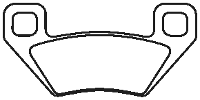

Specifications
General Specifications
Displacement700 cc
Model Years2012–2014
Service Data
Front Brake PadsEBC FA395 · SBS 822ATS

FA39594.5 × 45.5 × 7 mmEBC shape badges show the actual pad diagram, code and published dimensions. Diagrams reproduced with written permission from EBC.
Frequently Asked Questions
What is the engine displacement of the Aprilia TBX 700?
The Aprilia TBX 700 is listed with a 700 cc engine.
What brake pads does the TBX 700 use?
Front: EBC FA395 · SBS 822ATS. These are pad-shape references; confirm the compound and exact model year before ordering.
Specifications are manufacturer-claimed and can vary by model year and market. Confirm service limits and torque values against the owner's or workshop manual. Data updated 2026-11-22.